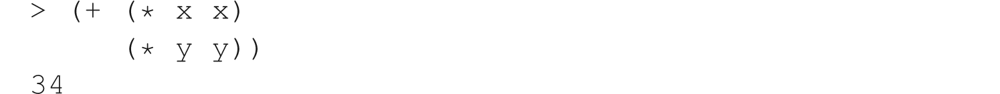
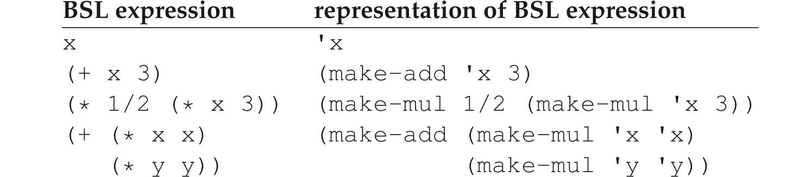

21.2 Interpreting Variables
Since the first section ignores constant definitions, an expression does not have a value if it contains a variable. Indeed, unless we know what x stands for, it makes no sense to evaluate (+ 3 x). Hence, one first refinement of the evaluator is to add variables to the expressions that we wish to evaluate. The assumption is that the definitions area contains a definition such as
(define x 5)
and that programmers evaluate expressions containing x in the interactions area:
> x
5
> (+ x 3)
8
> (* 1/2 (* x 3))
7.5
Indeed, you could imagine a second definition, say (define y 3), and interactions that involve two variables:

The preceding section implicitly proposes symbols as representations for variables. After all, if you were to choose quoted S-expressions to represent expressions with variables, symbols would appear naturally:
> 'x
'x
> '(* 1/2 (* x 3))
(list '* 0.5 (list '* 'x 3))
One obvious alternative is a string, so that "x" would represent x, but this book is not about designing interpreters, so we stick with symbols. From this decision, it follows how to modify the data definition from exercise 345:
; A BSL-var-expr is one of:
; -- Number
; -- Symbol
; -- (make-add BSL-var-expr BSL-var-expr)
; -- (make-mul BSL-var-expr BSL-var-expr)
We simply add one clause to the data definition.
As for data examples, the following table shows some BSL expressions with variables and their BSL-var-expr representation:

They are all taken from the interactions above, meaning you know the results when x is 5 and y 3.
One way to determine the value of variable expressions is to replace all variables with the values that they represent. This is the way you know from mathematics classes in school, and it is a perfectly fine way.
Exercise 352. Design subst. The function consumes a BSL-var-expr ex, a Symbol x, and a Number v. It produces a BSL-var-expr like ex with all occurrences of x replaced by v. 
Exercise 353. Design the numeric? function. It determines whether a BSL-var-expr is also a BSL-expr. Here we assume that your solution to exercise 345 is the definition for BSL-var-expr without Symbols.
Exercise 354. Design eval-variable. The checked function consumes a BSL-var-expr and determines its value if numeric? yields true for the input. Otherwise it signals an error.
In general, a program defines many constants in the definitions area, and expressions contain more than one variable. To evaluate such expressions, we need a representation of the definitions area when it contains a series of constant definitions. For this exercise we use association lists:
; An AL (short for association list) is [List-of Association].
; An Association is a list of two items:
; (cons Symbol (cons Number '())).
Make up elements of AL.
Design eval-variable*. The function consumes a BSL-var-expr ex and an association list da. Starting from ex, it iteratively applies subst to all associations in da. If numeric? holds for the result, it determines its value; otherwise it signals the same error as eval-variable. Hint Think of the given BSL-var-expr as an atomic value and traverse the given association list instead. We provide this hint because the creation of this function requires a little design knowledge from chapter 23.
An environment model Exercise 354 relies on the mathematical understanding of constant definitions. If a name is defined to stand for some value, all occurrences of the name can be replaced with the value. Substitution performs this replacement once and for all before the evaluation process even starts.
An alternative approach, dubbed the environment model, is to look up the value of a variable when needed. The evaluator starts processing the expression immediately but also carries along the representation of the definitions area. Every time the evaluator encounters a variable, it looks in the definitions area for its value and uses it.
Exercise 355. Design eval-var-lookup. This function has the same signature as eval-variable*:
; BSL-var-expr AL -> Number
(define (eval-var-lookup e da) …)
Instead of using substitution, the function traverses the expression in the manner that the design recipe for BSL-var-expr suggests. As it descends the expression, it “carries along” da. When it encounters a symbol x, it uses assq to look up the value of x in the association list. If there is no value, eval-var-lookup signals an error.